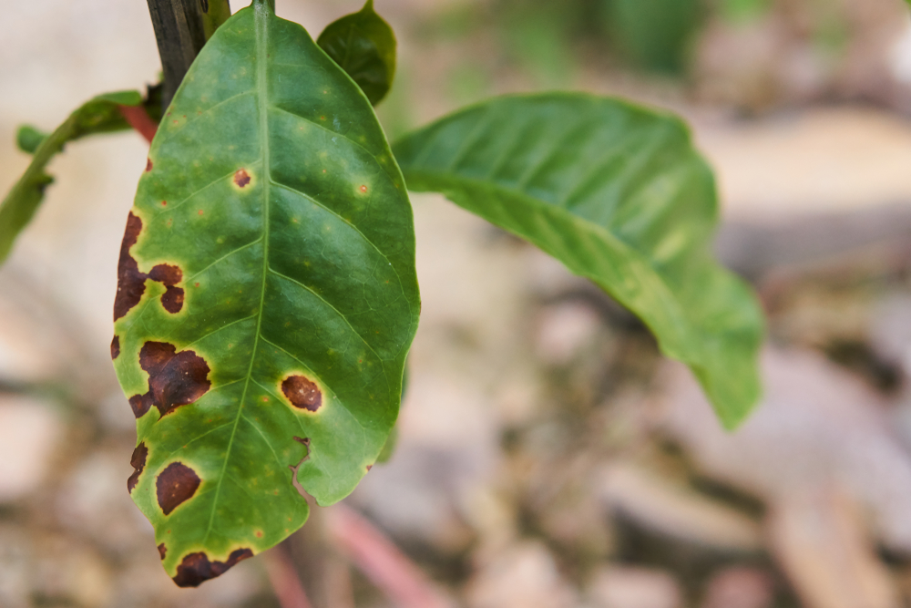
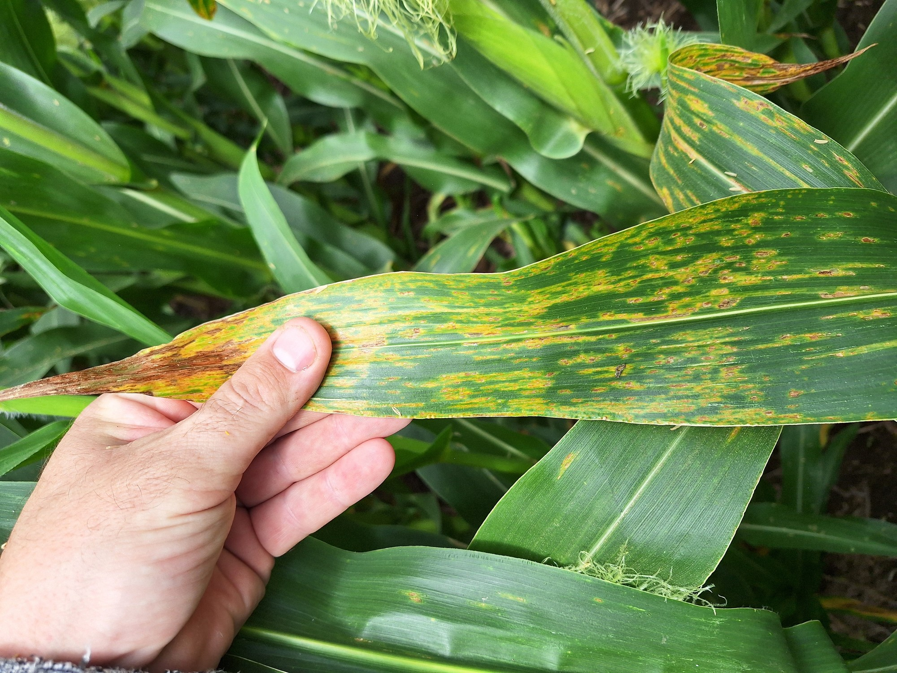

Carlos Mendoza
Agricultor • Hace 2 h
Necesito consejos sobre la roya del café. Mis plantas jóvenes están empezando a mostrar manchas anaranjadas en el envés de las hojas. ¿Alguien ha probado algún tratamiento biológico?


Agricultor • Hace 2 h
Necesito consejos sobre la roya del café. Mis plantas jóvenes están empezando a mostrar manchas anaranjadas en el envés de las hojas. ¿Alguien ha probado algún tratamiento biológico?

Ingeniera Agrónoma • Hace 5 h
La mancha de asfalto del maíz es causada por el hongo Phyllachora maydis y se reconoce por puntos negros brillantes como brea, rodeados de un halo amarillo en las hojas. Inicia abajo y sube con la humedad, secando la planta aunque llueva. Reduce la fotosíntesis y, si llega a la hoja bandera, puede tumbar más del 60% de la cosecha. Se controla con fungicidas a base de Estrobilurinas + Triazoles aplicados a tiempo.
